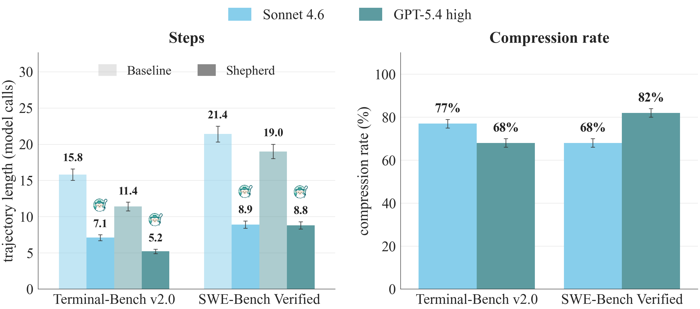

Shepherd: A Runtime Substrate Empowering Meta-Agents with a Formalized Execution Trace
Shepherd: A Runtime Substrate Empowering Meta-Agents with a Formalized Execution Trace
1Northeastern University · 2Stanford University
June 15, 2026

Motivation
What watches the harness? Right now, nothing. Your harness can pause an agent, fork it, and roll it back, yet it answers to no one, even though it makes your most expensive calls: what to retry, which attempt to keep, when to give up.
Why it gets a pass. Agent execution was never data. A run lives scattered across transcripts and environment snapshots, and the harness sits outside it as privileged host code. You can read the logs afterward. You can't pick the run up and branch it.
What runtimes give you today. OpenHands hands you a session's event stream. AgentGit gives the worker Git-like commit tools to checkpoint itself. BranchFS isolates the filesystem. Each is useful, and each is built for the agent that is running, not a second agent acting on it. None lets you take another  agent's whole execution, model state and environment and history at once, and branch it as one object. So every meta-agent rebuilds the same plumbing, and the real work, deciding when to step in, ends up frozen in orchestration code.
agent's whole execution, model state and environment and history at once, and branch it as one object. So every meta-agent rebuilds the same plumbing, and the real work, deciding when to step in, ends up frozen in orchestration code.
The idea: agents all the way up
When code became data, we got compilers, version control, and CI. Shepherd does the same for agent execution. Every action an agent takes (a model call, a tool call, a file write) becomes a typed commit in a Git-like trace, written down before it runs. The run becomes something you can fork and replay, like a Git branch. Once the run is data, the harness loses its special seat: it is just another agent reading and editing that data.
Four pieces. A task is the agent itself, a typed function over execution, written with an @agent decorator. An effect is something the agent does, a typed event that keeps the intent (the tool call it is about to make) separate from the outcome, so a meta-agent can slip in between. A scope is where it runs, an isolated environment that forks the agent and its filesystem together in one copy-on-write step. The execution trace is what already happened, a commit graph where any past state is reachable by hash.
The trace is literally Git. scope.fork() is git checkout -b, scope.merge() is git merge, scope.discard() is git branch -D. And the part that does the real work: a meta-agent is just a task whose argument is another task. No privileged loop, no special base class.
from shepherd import agent, observe, revert, fork
@agent(LLM="haiku")
def implement(repo, feature):
"Implement the feature in the repo"
@agent(LLM="opus", tool=[observe, revert, fork])
def oversee(run):
"Watch the worker. If its tests break, revert to an earlier state and retry."
run = implement(repo, "login")
implemented = oversee(run) # the meta-agent manages the agent
oversee watches the effect stream without disturbing it, pushes effects in to intervene, checks out an earlier commit to rewind, and forks a scope to try something else. Because it is an agent like any other, a third agent can supervise the supervisor by taking oversee's run as its input.1. One honest detail: not every effect can be undone. A filesystem write is reversible. A service write is compensable, through a handler you supply. A model call, a payment, an email: those are irreversible, recorded for audit but never un-sendable.
The formal footing
Each construct maps onto a familiar building block: task = typed function, effect = algebraic effect, scope = region-scoped handler, trace = persistent data structure. The properties we care about (observing without perturbing, an atomic fork of agent and environment together, byte-identical revert and replay) rest on a small algebraic-effects trace machine we mechanized in Lean: forward simulation for the core fragment, trace monotonicity, and a single-child branch-replay skeleton. We mechanized the core correctness argument, not the production Python runtime, and the paper marks exactly where the verified boundary stops.System performance: forking is nearly free
A fork has to be almost free, because the meta-agents below fork on every supervision step and every RL rollout. Shepherd adds a copy-on-write layer instead of copying the filesystem, so a fork stays fast no matter how big the image gets:
| Method | Fork 42 MB | Fork 200 MB | Fork 5.8 GB | Storage / fork |
|---|---|---|---|---|
| Full root-fs copy | 5,154 ms | 5,971 ms | 53,462 ms | up to 8.3 GB |
| docker commit | 658 ms | 692 ms | 725 ms | ~30 KB |
| BranchFS | 266 ms | 272 ms | 280 ms | ~12 KB |
| 134 ms | 135 ms | 143 ms | ~10 KB |
Fork latency by image size; revert is similar, 140 to 147 ms. The cost barely moves as the image grows: about 5x faster than docker commit, and up to 192x faster than a full copy on the 5.8 GB image, which is 2 to 3% of a single agent turn. A fork also keeps the byte-identical prefix, so replaying a branch reuses the provider's KV cache, with the hit rate settling around 95% from K=2 on.
Results
Three meta-agents on one Shepherd substrate, at three moments in an agent's life: while it runs, after it finishes, and while you train it.
Runtime supervision: multi-agent coordination for free
The failure. CooperBench documents an uncomfortable fact: two coding agents working in parallel on related features do worse than one agent doing both alone, because neither sees what the other is about to do.
The supervisor. We put a meta-agent over the pair. Two Claude Haiku 4.5  workers run in forked scopes, one feature each, while a meta-agent (Claude Sonnet 4.6 or Opus 4.7) watches both effect streams with three tools:
workers run in forked scopes, one feature each, while a meta-agent (Claude Sonnet 4.6 or Opus 4.7) watches both effect streams with three tools: inject guidance, handoff one worker's scope as the other's start, or discard a worker that is stuck.
The recovery. Over 479 pairs, the coop baseline (parallel workers, peer-to-peer messages, no supervisor) lands at 28.8%, well below the 57.2% solo ceiling. A Sonnet supervisor reaches 45.3%; an Opus supervisor 54.7%. By the gap arithmetic, (54.7 - 28.8) / (57.2 - 28.8), that closes 91% of the gap, at 1 to 5 minutes of overhead per pair.2. A proof of existence that the substrate enables live supervision, not a like-for-like compute win.

Which tools it reaches for. Counting pairs where each is used at least once, the Opus meta-agent injects on 39.2%, hands off on 31.5%, and discards rarely, on 4.6%. The weaker Sonnet supervisor steps in less (26.4% inject, 18.7% handoff) but pulls the kill switch more (7.9% discard).

Meta-optimization: counterfactual replay (CRO)
The noise problem. When a workflow fails, the fault is usually a few bad calls. Re-run a patched version from scratch and you pull in fresh randomness, so you can't tell whether your edit helped or the dice just landed differently.
Counterfactual replay. CRO forks the finished trace at the first commit your edit touches and replays only that suffix, against a fixed baseline. With GPT-5.4-mini as the executor and GPT-5.4 as the optimizer, CRO wins on 4 of 5 benchmarks against GEPA and MetaHarness, with both the highest held-out score and the lowest wall-clock on those four.
| Method | HoVer | MATH | IFBench | LiveCodeBench | TB-2 (avg@5) |
|---|---|---|---|---|---|
| Baseline | 43.7±0.0 | 60.7±1.2 | 42.4±1.8 | 30.7±2.1 | 31.2 |
| GEPA | 43.7±0.0 (67) | 74.0±3.5 (20) | 50.1±1.2 (50) | 48.7±1.5 (73) | 31.2 (157) |
| MetaHarness | 77.8±0.4 (235) | 79.3±1.2 (101) | 52.3±1.4 (126) | 40.0±3.6 (217) | 31.2 (173) |
| 79.4±0.2 (120) | 80.0±2.0 (42) | 51.3±1.1 (82) | 51.0±1.7 (117) | 35.2 (73) |
Test pass-rate mean ± std; optimization minutes in parentheses; bold = best per row. CRO's wall-clock lead over MetaHarness reaches ~58% on MATH (42 vs 101 min). On execution-heavy TB-2, neither GEPA nor MetaHarness beats the 31.2 baseline, while CRO reaches 35.2 (+4 points) at the least wall-clock. The one near-tie is IFBench: MetaHarness edges CRO inside a std (52.3 vs 51.3), and CRO still does it in less time, 82 vs 126 minutes.

Terminal RL: meta-agent-guided Tree-GRPO
Sparse reward. RL on long-horizon agent tasks is starved for signal: the reward is one bit, at the very end, so flat GRPO is slow to learn which turn mattered.
Sibling forks. During a rollout, a meta-agent picks a turn worth probing and forks K=4 sibling branches from that exact state. The spread across siblings gives a per-step counterfactual advantage from the same final reward, with no separate value model. Flat and Tree-GRPO run on matched generation compute (same budget, same rollout steps), so forking buys no extra compute. We train on Endless Terminals.

The transfer result. Out-of-distribution transfer to TerminalBench 2.0 (avg@5, 89 tasks, 5 seeds), a suite never seen in training:
| Model | Base | Flat GRPO | |
|---|---|---|---|
| Qwen3.5-35B-A3B | 26.1±4.21 | 34.2±4.05 | 39.4±3.87 (+5.2) |
| Nemotron-3-Super-120B-A12B | 30.3±3.62 | 33.8±3.41 | 37.2±3.19 (+3.4) |
Out-of-distribution transfer to TerminalBench 2.0, avg@5 (%); +gain is vs flat GRPO. The Qwen3.5 +5.2 clears its ~3.9 to 4.1 std comfortably.3. The Nemotron +3.4 only just edges past its ~3.2 to 3.4 std, a slim margin rather than a clean separation.
Cost: trajectory compression
A shorter path usually exists. This one lives in the appendix. Replay a passing run, then ask whether a strictly shorter passing run exists. On SWE-Bench Verified, 68% of Claude Sonnet 4.6 and 82% of GPT-5.4 passing baselines admit one; on TerminalBench v2.0, it is 77% and 68%. Mean Sonnet length on SWE-Bench Verified drops from 21.4 to 8.9 model calls.

FAQ
Isn't this just AutoGen orchestrating agents?
AutoGen's manager is an LLM in a privileged host loop. Its control actions aren't effects, and you can't supervise it without editing the framework. The difference is uniformity, not existence.Doesn't LangGraph already have checkpointing and time-travel?
Those are engine features, not capabilities an agent inside the system can express. A checkpoint is engine state, not a content-addressed identity that stays stable across runs.ADAS has a meta-agent. Isn't that the same?
ADAS writes agents at design time. SHEPHERD's meta-agent supervises execution at run time.Isn't this just algebraic effects?
Yes, on purpose. What's new is durable handler semantics: content-addressed traces, authority records, and branch-and-replay that outlive the process.Isn't your kernel privileged too?
The right objection. But the kernel is mechanism, not policy: it intercepts, persists, and enforces permissions, and it makes no agentic decisions. Every decision (retry, approve, spend) lives in some agent.What's the one-line test for whether a harness is "just another agent"?
Can you put a supervisor over your orchestrator by *writing an agent*, instead of forking the framework? If not, your harness isn't an agent. It just contains one.Try it
# 1 · install
pip install shepherd-ai
shepherd init
# 2 · add a coding-agent plugin
shepherd plugin install claude-code # or: shepherd plugin install codex
# 3 · run it; every step is a commit
shepherd run claude "fix the login bug"
# 4 · went wrong? roll back like git
shepherd log
shepherd revert 4
shepherd log reads the execution trace like git log: every model call, tool call, and file edit is a commit.
* 6 e8f1a2c tool · pytest tests/ ✗ 2 failed
* 5 3b9d40e edit · auth/session.py +18 -4
* 4 a1c77f2 tool · pytest tests/ ✓ 41 passed
* 3 9f4e2a1 edit · auth/login.py +12 -3
* 2 7c8d5b0 tool · grep -rn "session" auth/
* 1 c0ffee1 model · plan: fix the login bug
* 0 0a2b8c1 run · claude "fix the login bug" (root)
shepherd revert 4 puts the agent and its filesystem back to commit 4, byte for byte, and drops the regression at commit 5. You are back to green.
So the interesting question isn't ours: what would you build with a harness you can fork and rewind?
Acknowledgments
Thanks to our early readers for their feedback.
@misc{yu2026shepherdruntimesubstrateempowering,
title={Shepherd: A Runtime Substrate Empowering Meta-Agents with a Formalized Execution Trace},
author={Simon Yu and Derek Chong and Ananjan Nandi and Dilara Soylu and Jiuding Sun and Christopher D Manning and Weiyan Shi},
year={2026},
eprint={2605.10913},
archivePrefix={arXiv},
primaryClass={cs.AI},
url={https://arxiv.org/abs/2605.10913}
}